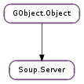

| add_auth_domain(auth_domain) | |
| add_handler(path, callback, *user_data) | |
| disconnect() | |
| get_async_context() | |
| get_listener() | |
| get_port() | |
| is_https() | |
| pause_message(msg) | |
| quit() | |
| remove_auth_domain(auth_domain) | |
| remove_handler(path) | |
| run() | |
| run_async() | |
| unpause_message(msg) |
| Name | Type | Flags | Description |
|---|---|---|---|
| async-context | int | r/w/c | The GLib.MainContext to dispatch async I/O in |
| http-aliases | list | r/w | URI schemes that are considered aliases for ‘http’ |
| https-aliases | list | r/w | URI schemes that are considered aliases for ‘https’ |
| interface | Soup.Address | r/w/c | Address of interface to listen on |
| port | int | r/w/c | Port to listen on |
| raw-paths | bool | r/w/c | If True, percent-encoding in the Request-URI path will not be automatically decoded. |
| server-header | str | r/w | Server header |
| ssl-cert-file | str | r/w/c | File containing server SSL certificate |
| ssl-key-file | str | r/w/c | File containing server SSL key |
| tls-certificate | Gio.TlsCertificate | r/w/c | Gio.TlsCertificate to use for https |
| Name | Parameters | Return | Description |
|---|---|---|---|
| request-aborted | Soup.Message, Soup.ClientContext | Emitted when processing has failed for a message; this could mean either that it could not be read (if Soup.Server ::request-read has not been emitted for it yet), or that the response could not be written back (if Soup.Server ::request-read has been emitted but Soup.Server ::request-finished has not been). message is in an undefined state when this signal is emitted; the signal exists primarily to allow the server to free any state that it may have allocated in Soup.Server ::request-started. | |
| request-finished | Soup.Message, Soup.ClientContext | Emitted when the server has finished writing a response to a request. | |
| request-read | Soup.Message, Soup.ClientContext | Emitted when the server has successfully read a request. message will have all of its request-side information filled in, and if the message was authenticated, client will have information about that. This signal is emitted before any handlers are called for the message, and if it sets the message’s #status_code, then normal handler processing will be skipped. | |
| request-started | Soup.Message, Soup.ClientContext | Emitted when the server has started reading a new request. message will be completely blank; not even the Request-Line will have been read yet. About the only thing you can usefully do with it is connect to its signals. If the request is read successfully, this will eventually be followed by a Soup.Server ::request-read signal. If a response is then sent, the request processing will end with a Soup.Server ::request-finished signal. If a network error occurs, the processing will instead end with Soup.Server ::request-aborted. |
| Name | Type | Access |
|---|---|---|
| parent | GObject.Object | r |
Bases: GObject.Object
| Parameters: | auth_domain (Soup.AuthDomain) – a Soup.AuthDomain |
|---|
Adds an authentication domain to server. Each auth domain will have the chance to require authentication for each request that comes in; normally auth domains will require authentication for requests on certain paths that they have been set up to watch, or that meet other criteria set by the caller. If an auth domain determines that a request requires authentication (and the request doesn’t contain authentication), server will automatically reject the request with an appropriate status (401 Unauthorized or 407 Proxy Authentication Required). If the request used the “100-continue” Expectation, server will reject it before the request body is sent.
| Parameters: |
|---|
Adds a handler to server for requests under path. See the documentation for Soup.ServerCallback for information about how callbacks should behave.
If path is None or “/”, then this will be the default handler for all requests that don’t have a more specific handler. Note though that if you want to handle requests to the special “*” URI, you must explicitly register a handler for “*”; the default handler will not be used for that case.
Stops processing for server and closes its socket. This implies the effects of Soup.Server.quit (), but additionally closes the listening socket. Note that messages currently in progress will continue to be handled, if the main loop associated with the server is resumed or kept running.
After calling this function, server is no longer functional, so it has nearly the same effect as destroying server entirely. The function is thus useful mainly for language bindings without explicit control over object lifetime.
| Returns: | server ‘s GLib.MainContext, which may be None |
|---|---|
| Return type: | GLib.MainContext |
Gets server ‘s async_context. This does not add a ref to the context, so you will need to ref it yourself if you want it to outlive its server.
| Returns: | the listening socket. |
|---|---|
| Return type: | Soup.Socket |
Gets server ‘s listening socket. You should treat this as read-only; writing to it or modifiying it may cause server to malfunction.
| Returns: | the port server is listening on. |
|---|---|
| Return type: | int |
Gets the TCP port that server is listening on. This is most useful when you did not request a specific port (or explicitly requested Soup.ADDRESS_ANY_PORT ).
| Returns: | True if server is serving https. |
|---|---|
| Return type: | bool |
Checks whether server is running plain http or https.
In order for a server to run https, you must set the Soup.SERVER_SSL_CERT_FILE and Soup.SERVER_SSL_KEY_FILE properties or Soup.SERVER_TLS_CERTIFICATE property to provide it with an SSL certificate to use.
| Parameters: | msg (Soup.Message) – a Soup.Message associated with server. |
|---|
Pauses I/O on msg. This can be used when you need to return from the server handler without having the full response ready yet. Use Soup.Server.unpause_message () to resume I/O.
Stops processing for server. Call this to clean up after Soup.Server.run_async (), or to terminate a call to Soup.Server.run ().
server is still in a working state after this call; you can start and stop a server as many times as you want.
| Parameters: | auth_domain (Soup.AuthDomain) – a Soup.AuthDomain |
|---|
Removes auth_domain from server.
| Parameters: | path (str) – the toplevel path for the handler |
|---|
Removes the handler registered at path.
Starts server, causing it to listen for and process incoming connections. Unlike Soup.Server.run_async (), this creates a GLib.MainLoop and runs it, and it will not return until someone calls Soup.Server.quit () to stop the server.
Starts server, causing it to listen for and process incoming connections.
The server actually runs in server ‘s GLib.MainContext. It will not actually perform any processing unless the appropriate main loop is running. In the simple case where you did not set the server’s Soup.SERVER_ASYNC_CONTEXT property, this means the server will run whenever the glib main loop is running.
| Parameters: | msg (Soup.Message) – a Soup.Message associated with server. |
|---|
Resumes I/O on msg. Use this to resume after calling Soup.Server.pause_message (), or after adding a new chunk to a chunked response.
I/O won’t actually resume until you return to the main loop.